爭取中央無償撥用閒置地 游淑貞擘劃太昌全齡食農綠洲
吉安鄉永安村太昌段閒置公有土地成功活化，獲中央補助及公所自籌總經費850萬元，規劃為全齡友善食農綠洲，串聯榮安公園形成一動一靜綠帶系統，提供親子休憩、高齡友善及食農教育場域。…
閱讀全文 →吉安鄉永安村太昌段閒置公有土地成功活化，獲中央補助及公所自籌總經費850萬元，規劃為全齡友善食農綠洲，串聯榮安公園形成一動一靜綠帶系統，提供親子休憩、高齡友善及食農教育場域。…
閱讀全文 →
吉安鄉公所攜手花蓮聖能宮，於今日上午辦理物資捐贈活動，發放118戶綜合物資。鄉長游淑貞肯定宮方投入公益，強調公私協力讓愛在社區扎根，期待吸引更多民間力量加入弱勢關懷行列。…
閱讀全文 →
中壢慈惠堂跨域捐贈300份綜合物資予吉安鄉弱勢族群，由鄉長游淑貞代表受贈。該堂延續母娘慈悲精神，將普渡物資轉為實質生活支援，花蓮縣政府社會處亦參與儀式，共築跨地域慈善網絡。…
閱讀全文 →
吉安鄉游淑貞鄉長輔導稻香社區媽媽教室，20餘位婦女學習後轉化為社區照護力量，從情緒療癒到烘焙技能，學以致用關懷獨居長者。社區以文化與數位轉型，代表花蓮縣參選金卓越社區選拔，展現基層治理成效。…
閱讀全文 →
新北市板橋區宗教團體捐贈千餘斤白米與急難救助金，由吉安鄉公所協助發放給20戶弱勢家庭，吉安鄉長游淑貞感謝善心人士跨縣市送暖，落實弱勢關懷政策。…
閱讀全文 →
花蓮慈濟醫院智能健康管家APP再升級，新增電子簽署與陪病證申請功能。民眾可透過手機完成醫療文件簽署、查詢就醫進度，並線上申請住院陪病證，簡化就醫流程、減少紙本往返，花蓮鄉親就醫更便利。…
閱讀全文 →
新城分局北埔警員強子文接獲民眾通報，在花蓮縣新城鄉北埔路口發現一名醉倒在地的黃姓男子，警方立即下車檢視並安全護送其返家，避免酒醉民眾於馬路發生危險，展現基層警方暖心作為。…
閱讀全文 →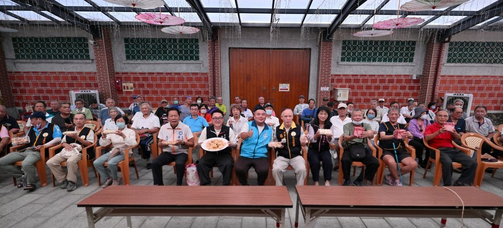
吉安鄉游淑貞鄉長昨日上午於好客藝術村舉辦手作鳳梨酥研習活動，吸引70餘位鐵路退休協會會員參與，透過專業教師示範教學，傳承烘焙技藝，豐富銀髮族退休生活，並促進社區交流，營造濃濃中秋氛圍，實踐幸福吉安願景。…
閱讀全文 →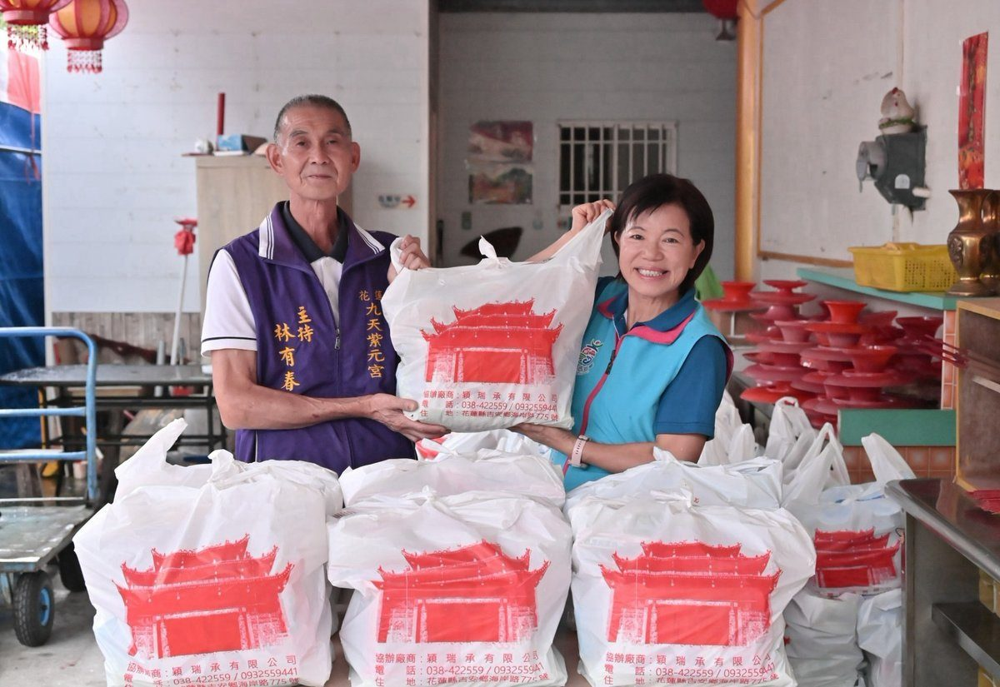
吉安鄉九天紫元宮響應中元普渡，捐贈150份平安物資與100台斤白米，透過公所物資捐贈平台精準配發給弱勢家庭。游淑貞鄉長持續深耕基層福利，結合宗教力量與平台機制，讓社會關懷有效延伸至每個需要幫助的鄉親。…
閱讀全文 →花蓮慈濟醫院推動醫療無人機物流，從災時應急送藥延伸至日常常態配送，解決花東偏鄉、山區及離島用藥與檢體運送困難，讓民眾就醫更便利。…
閱讀全文 →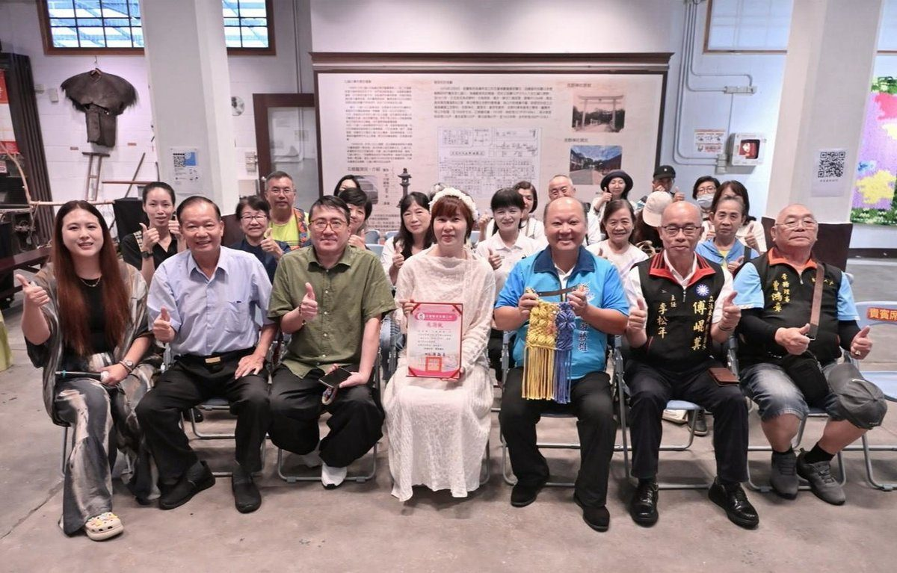
吉安鄉游淑貞鄉長推動編織師生聯展進駐吉安好客藝術村，透過藝術創作支持身障學員培力與社區發展，作品義賣所得捐贈在地公益團體，讓藝文展覽兼具療癒與社會效益。…
閱讀全文 →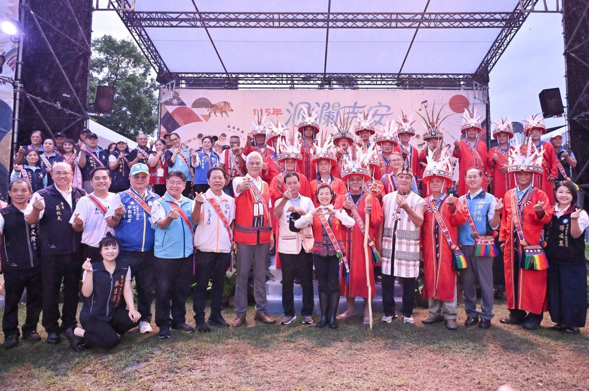
吉安鄉9月5日舉辦原住民族聯合豐年節，吸引逾5000人次參與，鄉長游淑貞頒發文化耕耘獎並宣布8年完成7座部落聚會所，未來持續推動部落建設與文化傳承，打造吉安原民文化品牌。…
閱讀全文 →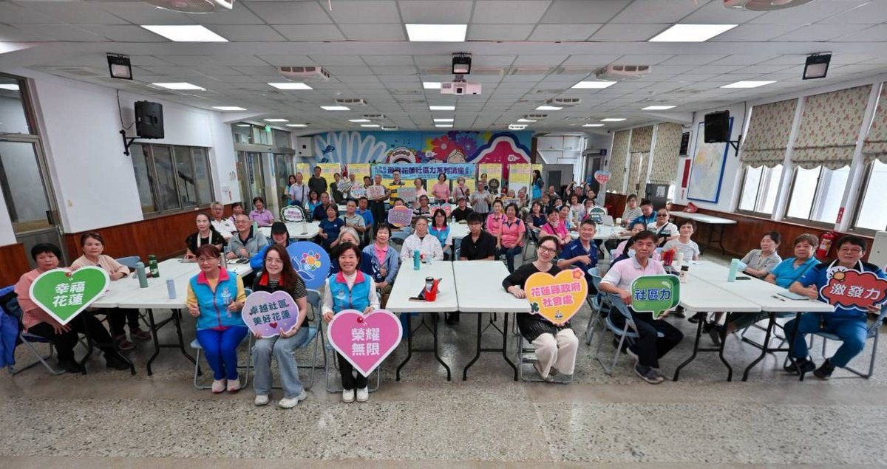
吉安鄉公所今日舉辦社區力系列講座，聚焦性別平等與防治性騷擾議題。鄉長游淑貞勉勵志工攜手打造零暴力友善社區，並指出吉安鄉八年來七次評鑑獲六次優等佳績，展現社區發展深厚實力。…
閱讀全文 →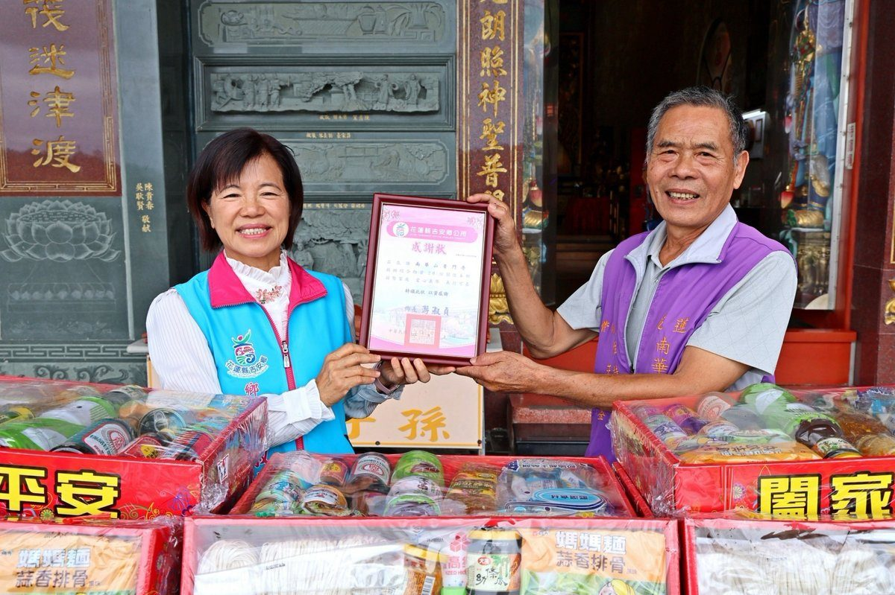
可樂電子報小編/編輯 中元普渡傳溫情！南華山普門寺號召信眾將贊普後的平安物資捐出，透過吉安鄉公所物資捐贈平 […]…
閱讀全文 →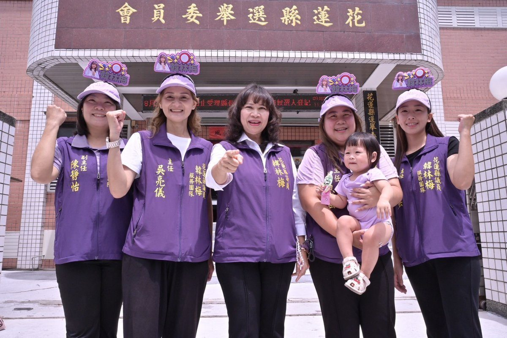
可樂電子報小編/編輯 獲中國國民黨提名的現任花蓮縣議員韓林梅，今（4）日上午11:17完成第21屆縣議員第一選 […]…
閱讀全文 →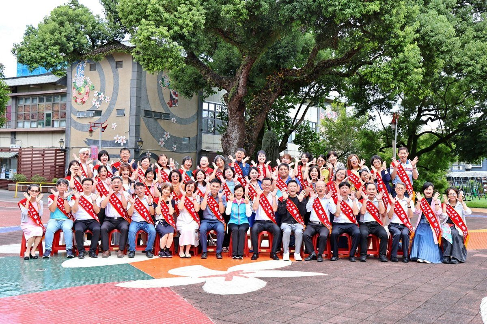
吉安鄉公所為感謝教育人員辛勞，鄉長游淑貞率團隊於好客藝術村拍攝敬師形象照。115年度教師節表揚活動將表揚50位優良校長及教職人員，涵蓋治校、愛心模範及客語推動等領域，共同見證吉安教育的傳承與發展。…
閱讀全文 →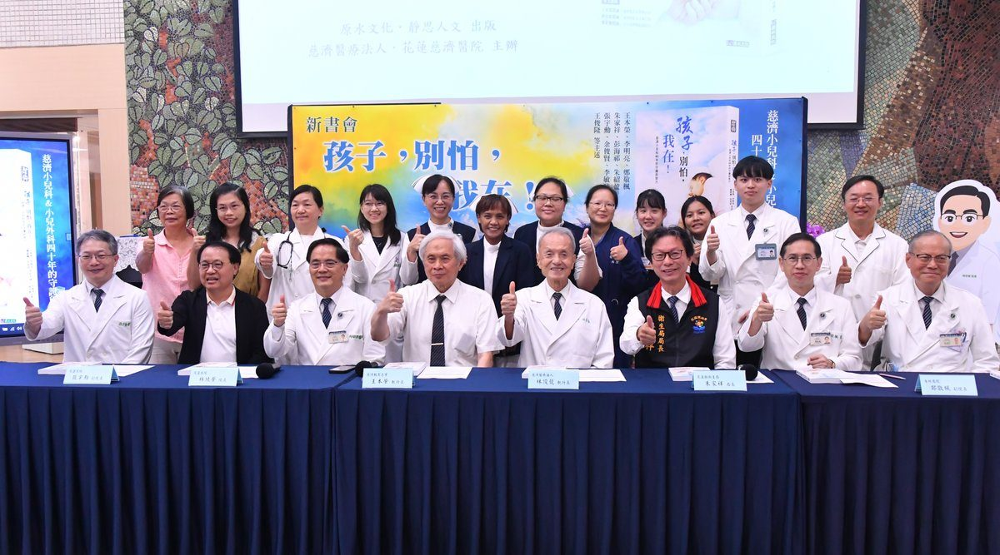
慈濟小兒科邁入40年，花蓮慈濟醫院舉辦《孩子，別怕，我在！》新書分享會，回顧醫師團隊在偏鄉艱困環境中構築24小時兒科急診的奮鬥歷程，並期盼更多年輕醫師接力守護花東兒童健康。…
閱讀全文 →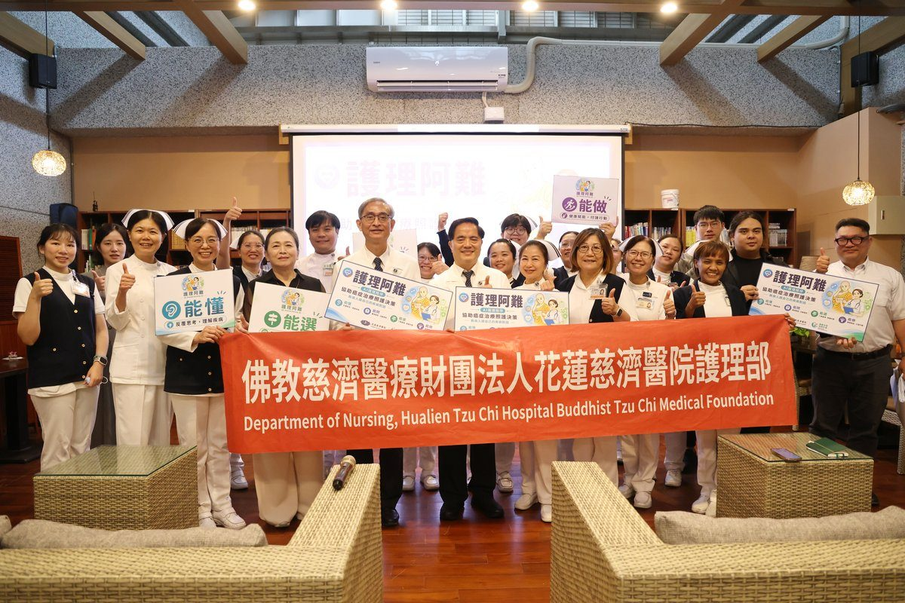
花蓮慈濟醫院開發AI智慧照護平台「護理阿難」，從癌症病人真實問題出發，結合專業醫療知識，提供語音與文字雙重輸入，支援六種語言，並確保對話資料保存在地端系統，陪伴癌友勇敢發問。…
閱讀全文 →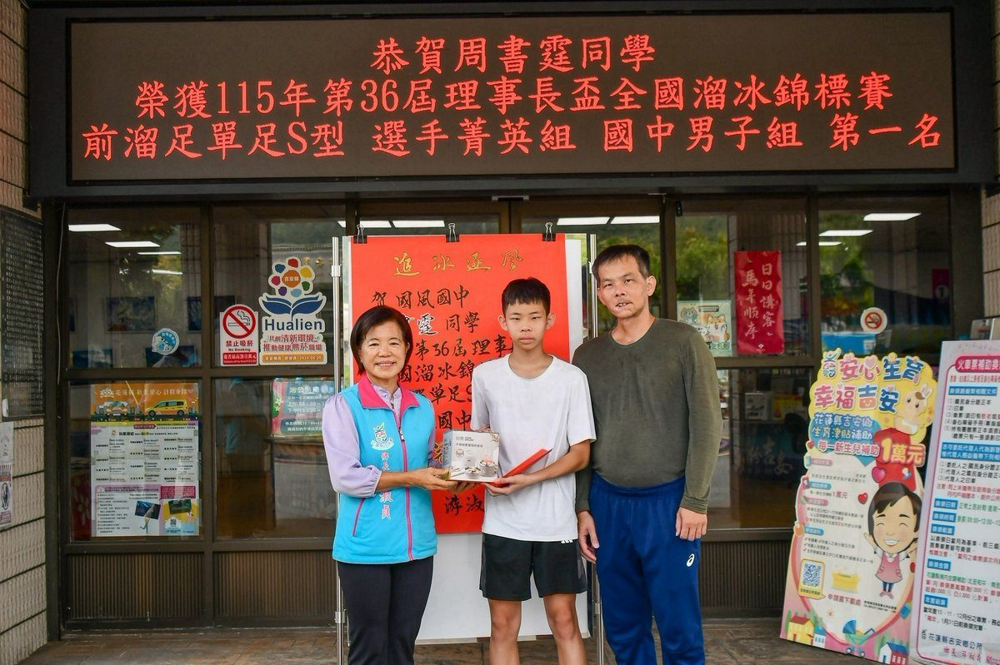
可樂電子報小編/編輯 花蓮縣吉安鄉體壇再傳捷報！優秀滑輪溜冰選手周書霆日前參加「115 […]…
閱讀全文 →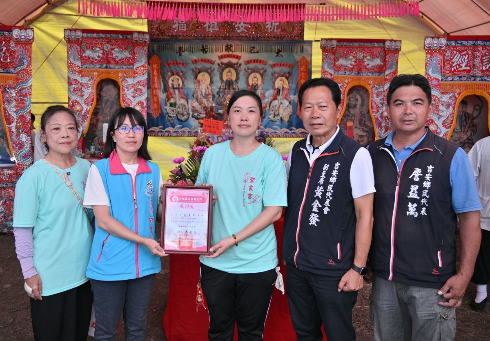
可樂電子報小編/編輯 花蓮聖玄宮秉持宗教弘道、扶弱濟貧與大愛精神，日前特別在孝親月舉辦 […]…
閱讀全文 →